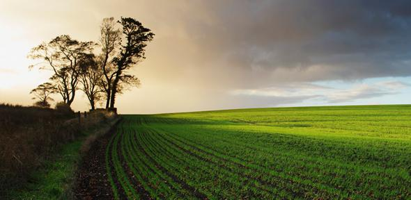
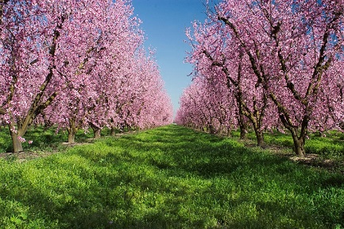
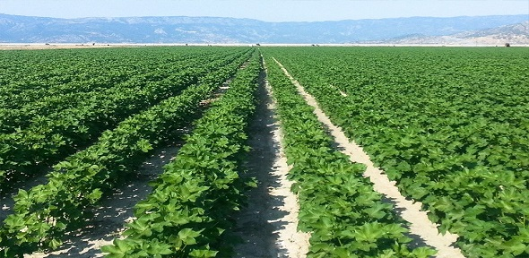

Agro
dimoprasies
Αγροτικα Προίοντα σε δημοπρασια
HOMEPAGE
ABOUT US
SUPPORT
Εγγραφή
Σχετικά με εμάς
Η ιστοσελιδα μας ιδρυθηκε τον Φεβρουαριο του 2018. Η βασικη ιδεα ηταν να βρουμε έναν καινοτομο τροπο ώστε να προβαλουμε και να προωθουμε τα αγαθα από τις καλιεργιες της οικογενειας. Επειτα η ιδεα αυτή εξελιχθηκε και φτασαμε στο συμπερασμα να δημιουργησουμε ένα διαδυκτιακο φυλλομετρητη που διαφοροι παραγωγοι θα μπορουν να προωθησουν τα αγαθα τους στην ποσοτητα και στην τιμη που συμφερει και τις δυο πλευρες (παραγωγους, καταναλωτες). Πλεον η επιχειρηση μας εχει γινει γνωστη πανελληνίως και οι χρηστές της δηλωνουν πολύ ικανοιποιημενοι κατι που μας χαροποίει ιδιαιτερα .
   ❮ ❯